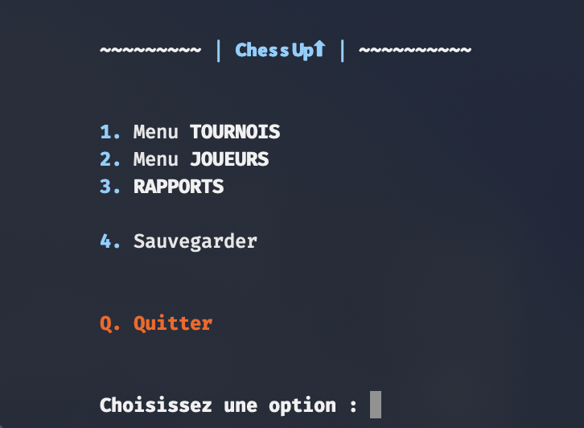
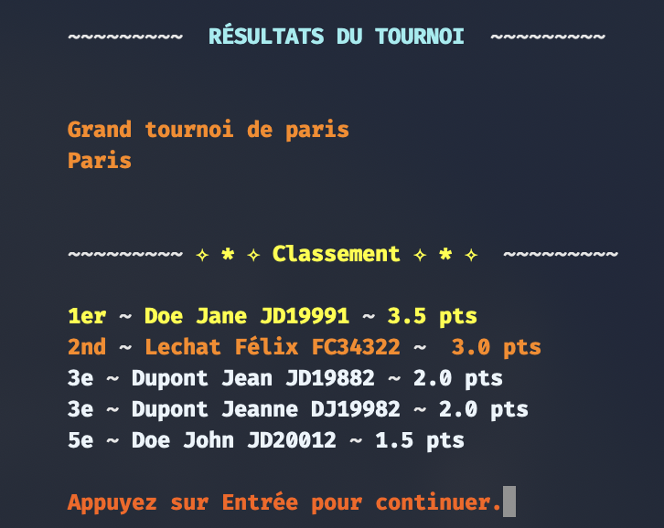

ChessUp⬆︎
Gestionnaire de Tournois d’Échecs en Ligne de Commande
Organisez et administrez un open d’échecs complet, du premier coup jusqu’à la remise des prix, sans jamais quitter votre terminal : pas de tableur, pas de galère, juste le jeu.
- Flux CLI complet – Interface terminal intuitive pour créer un tournoi, ajouter des joueurs, lancer les rondes, saisir les résultats et éditer des rapports, le tout sans quitter le CLI.
- Appariement Suisse – Algorithme évitant les recontres en double et gérant automatiquement les joueurs exemptés (bye) si besoin, pour des rondes équilibrées.
- Stockage JSON persistant – Sauvegarde automatique de toutes les données du tournoi et des joueurs dans des fichiers JSON, permettant de reprendre la gestion là où on l’avait laissée après une pause.
- Lisibilité améliorée – Sortie console enrichie via des codes couleur ANSI (utilitaire `ansify()` intégré) assurant une lecture confortable en thèmes clair ou sombre.
- Qualité du code – Code conforme à PEP8, avec outils de linting (*flake8* et rapport HTML) pour maintenir une base de code propre et fiable dans le temps.
// Le menu principal

// L'affichage des résultats
